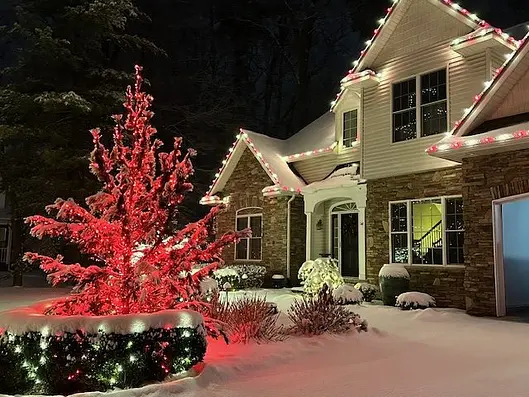
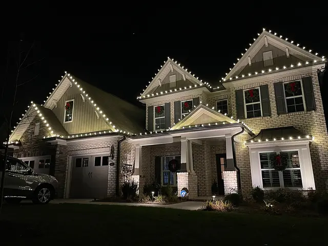

Customized design
A lighting plan shaped around your property and your holiday vision.
A brighter holiday season
Custom Christmas lighting for Utah homes and businesses. You bring the vision. We handle the installation.
Request a holiday quoteFrom first light to final takedown
Tell us how you’d like your property to look. We’ll discuss your design, scope and seasonal scheduling in a personalized quote.
A lighting plan shaped around your property and your holiday vision.
Let us handle the installation so you can enjoy the season.
We arrange removal after the holidays as part of the service plan.
Lights are stored at our warehouse until the following holiday season.


Light supply, ownership, pricing, installation dates and storage terms are confirmed in your quote.
A clearer view starts here
Tell us about your property. We’ll take it from there.